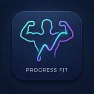

ProgressFit
記録はご本人のGoogleアカウントでログインして表示します。
Googleログイン版を開く 初回はSafariで開いてGoogleにログインしてください。目標値は端末に保存されるため、新しい画面で再設定が必要です。
記録はご本人のGoogleアカウントでログインして表示します。
Googleログイン版を開く 初回はSafariで開いてGoogleにログインしてください。目標値は端末に保存されるため、新しい画面で再設定が必要です。